AI 作品
Next
围绕 Agent Harness 的个人实践：从页面生成、工具约束、评价指标到失败日志，观察模型如何进入真实工作流。
为什么是 Agent Harness
这不是一组完成态产品，而是我把复杂系统设计经验转向 Agent 产品的过程：用 AI 工具真实构建，用评测暴露问题，用产品判断决定哪些环节应该自动化、哪些必须交还给人。
Harness
把模型放进可控任务环境
Paige 不是追求全自动，而是围绕需求到界面这个任务，设计输入、操作词表、执行层校验、评价器和失败日志。
Measure
先量代理指标，再补真实用户层
目前能量的是产出率、覆盖率、一致性、幻觉和人工修改线索；真实用户价值仍需要灰度、访谈、任务日志继续验证。
Practice
高强度使用 Agent 工具
我在 Paige 开发中持续使用并对比 Claude Code、Codex、Cursor 等工具，观察它们如何理解任务、调用工具、处理失败和证明完成。
Agent Harness · 个人项目
Paige —— 用一句话生成可编辑的 B 端页面
一个 AI 辅助的业务界面生成与编辑环境。它还不是完整自主 Agent，更接近 Agent Harness 的局部实验：围绕“需求到界面”这个任务，组织输入、约束工具、检查结果、记录失败，并让人继续校准。
0→1 自研
PageModel
Evaluator
↗
Agent 评测 · 度量框架
怎么量一个 Agent 有没有真的帮到人
一套三层度量框架，和用它跑出来的真实 A/B 结果。包括一个一跑就暴露的虚荣指标陷阱：0 产出，满分指标。
度量套件 · 12 测
多维 A/B
↗
评测驱动 · 考题集
一套考题集，把识别从 70 分磨到 100 分
12 张真实设计稿沉淀成可重跑的考题集。先跑分再修问题，靠失败归类定位短板，改一处重跑全卷防回归。
70% → 100%
12 张真实稿
↗
历史作品
Archive
十年企业级设计的沉淀。每一个案例都是在复杂系统中磨出来的判断力。
旧版作品集 · 含动态演示
部分项目的动态效果与视频演示收录在旧版作品集《Product Designer-谢松伦》，想看动效可前往查看。
↗
视频 SaaS · Kuaishou
快手云剪 Onvideo — 从 0 到 1
面向多端协同视频剪辑的 SaaS 产品。从视觉到交互完整重构，引入全新交互范式，沉淀 10+ 外观专利、1 项发明专利。
Web 端
0→1 重构
该产品 10+ 专利
↗
Analytics · ByteDance
BABI 经营分析平台重构
从 0 到 1 主导 BABI 产品重构与易用性优化，与 PM 共同重构产品架构，视觉交互全面升级，获公司内部认可。
B 端中台
0→1 重构
↗
Video Cloud · Volcano Engine
视频云基础体验优化
统筹视频点播、RTC、VelmageX 等多个产品体验优化，解决体验问题 600+，显著提升平台整体基础体验。
600+ 问题
多产品统筹
↗
Design System · ByteDance
多媒体中台物料库建设
推动视频云物料库建设，完成通用页面 80% 覆盖率，共建设 39 组件、11 区块、8 页面，模块数达物料团队第一。
39 组件
设计系统
↗
AI 思考
Signal
做 Paige 一路沉淀下来的思考。关于让 AI 可靠、怎么对自己的系统挑刺、复用与底线、以及 Agent 的真相。每一篇都有真实的踩坑与判断。
AI 思考 · 工具实测
针对 CC 和 codex 的真实对比
用 Paige 里的同一个真实需求，对比 CC 和 codex 的处理方式。两边测试都通过，但具体输入暴露出不同的默认判断和风险。
文章 · 工具实测
↗
AI 思考 · 第一性原理
通过不等于做对
一次覆盖率 100% 之后的复查。真正的问题不是检查没通过，而是系统还有很多地方没有被要求说真话。
文章 · 第一性原理
↗
AI 思考 · 可控性
关于可控性的思考
从一个看不见的提交按钮开始，我重新理解了模型可控性。可靠性不是让模型不犯错，而是限制错误造成后果的范围。
文章 · 模型可控性
↗
AI 思考 · 取舍
什么值得自己造
结构化输出可以复用现成能力，但 PageModel、设计系统、渲染约束和评价器必须自己掌握。这是 Paige 的边界。
文章 · 复用 vs 自建
↗
AI 思考 · 踩坑
我动了不该动的那层
一次把字段决策放错层导致的质量退化。大脑可以灵活迭代，生成层必须稳定，这是后来才真正立住的架构纪律。
文章 · 架构纪律
↗
AI 思考 · 机制
接上大模型，并不等于做出了 Agent
接入强模型只是一次转换能力。Paige 读 PRD 真正接近 Agent 的地方，是它会根据评价结果决定下一轮怎么修。
文章 · Agent 机制
↗
设计之外
Human
工作之外的我。这份作品集聊了很多 AI，但做这一切的，是一个人。
BEIJING GMT+8 --:--
40.0°N 116.3°E

会做一桌菜
高兴的日子做一桌菜，难过的日子也做一桌菜。有一阵沉迷烤恰巴塔，手撕肋排是保留节目，勃艮第红酒炖牛肉要配一杯自己调的莫吉托。工具也认真——最称手的是一把日本堺的实光厨刀。
 一日三餐
一日三餐
 超级好吃的手撕肋排
超级好吃的手撕肋排
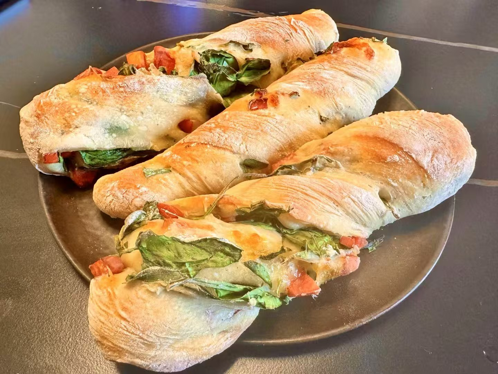
有一阵很喜欢做恰巴塔
勃艮第红酒炖牛肉，配莫吉托
最喜欢的厨刀——日本 堺 · 实光
调酒，玩得有点认真
不是摆着好看的爱好：上过课、修过 whisky 证书、混过调酒师的聚会。从 Gin Tonic 这样的经典一路往深里走——自己写茶酒配方、自己蒸金酒，冰球也是手凿的。
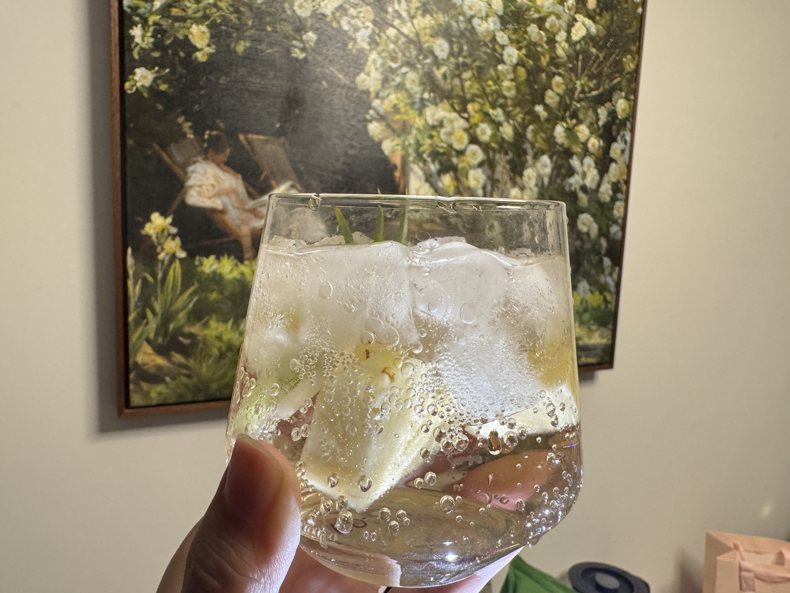
最爱的 Gin Tonic
Whiskey Sour
Guava Sour
Mint Julep
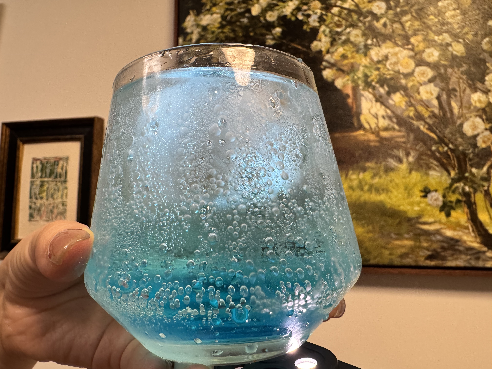
Blue Lagoon
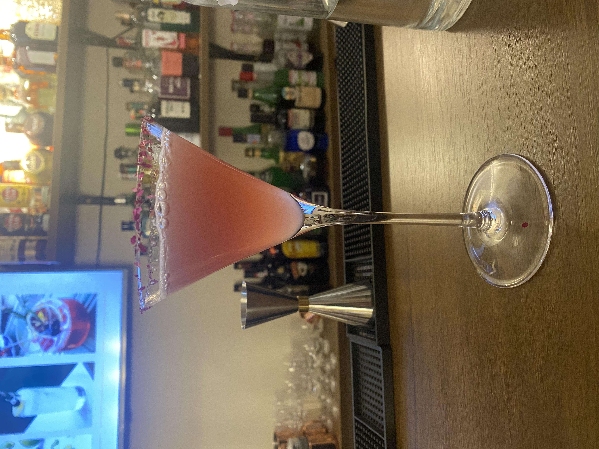
粉色马天尼，杯口是玫瑰花瓣
茶酒 · 东方暮色
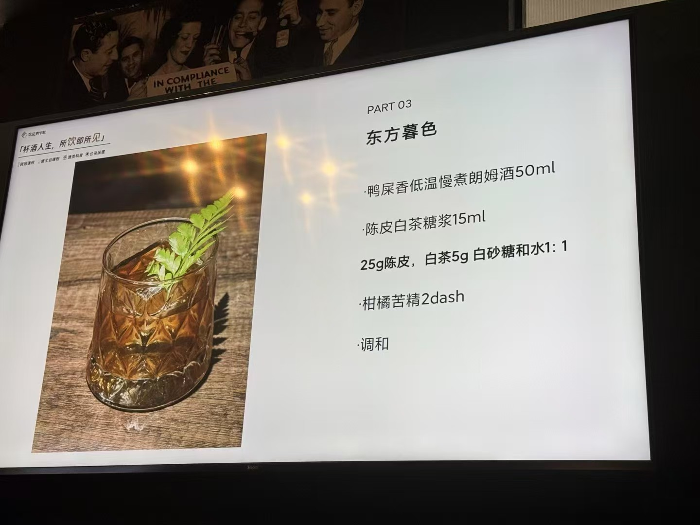
自己写的茶酒配方
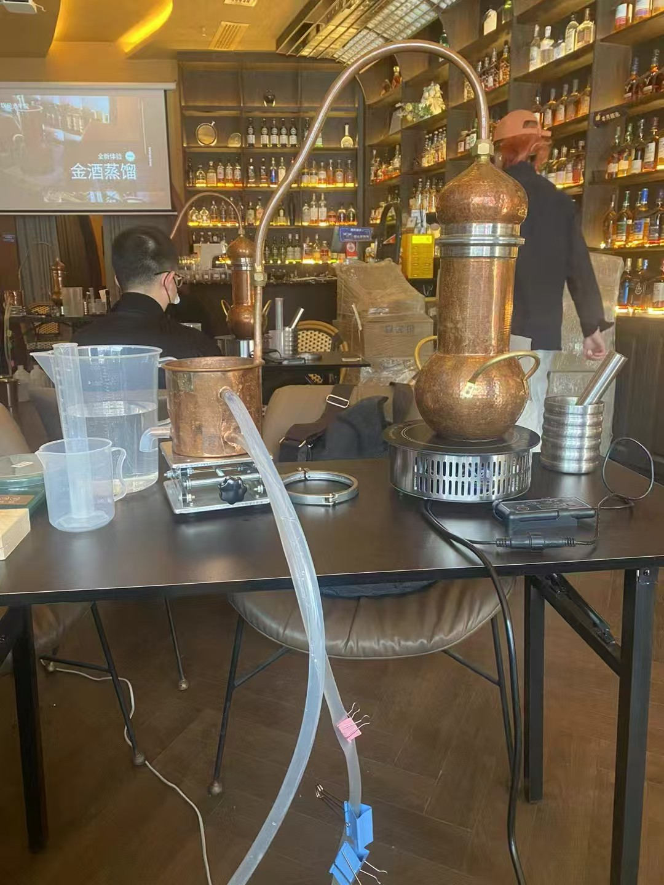
自制蒸馏金酒
第一次手凿冰球
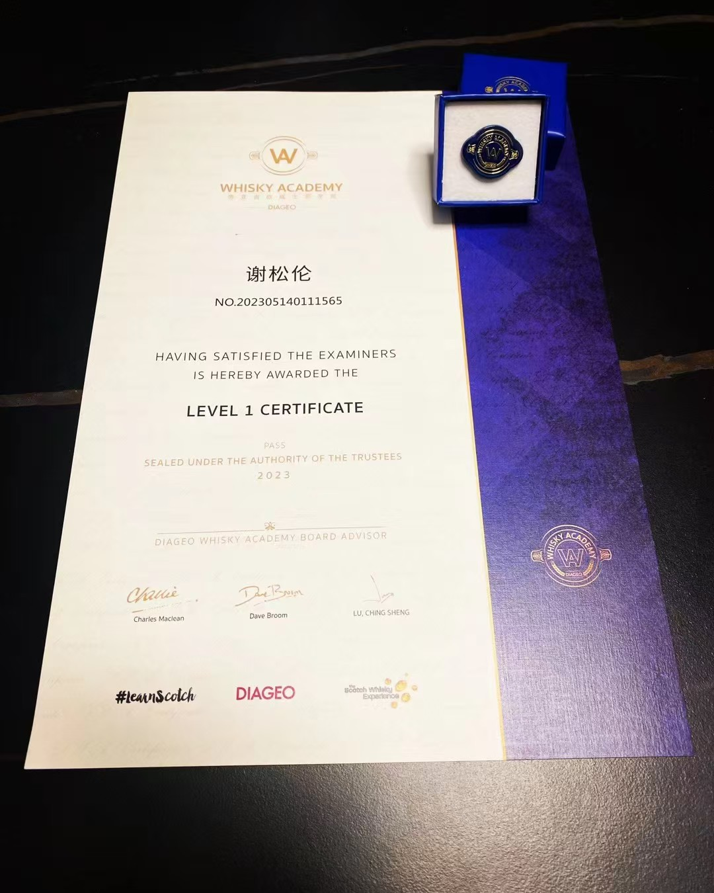
Whisky 课程证书
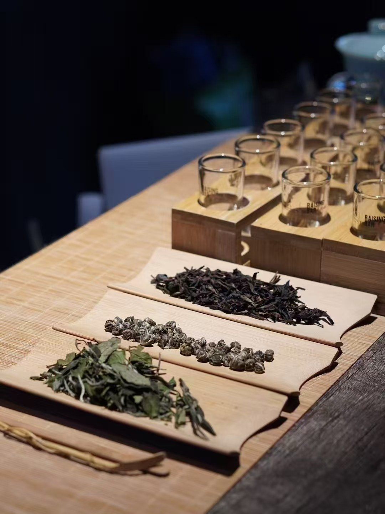
茶酒课程
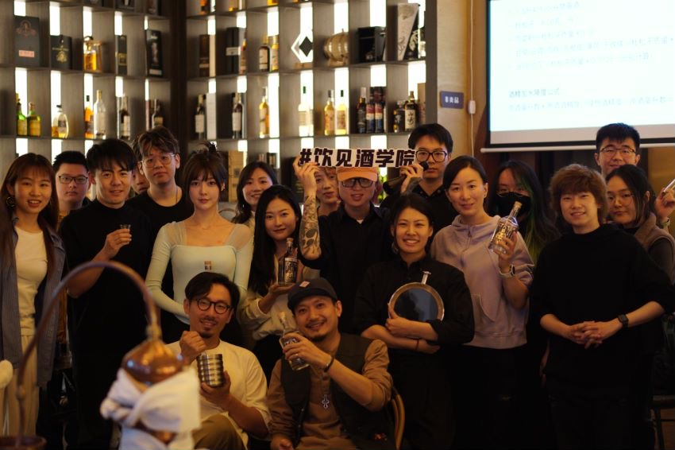
调酒师聚会
重看次数最多的两部
一部剧一部电影，讲的其实是同一种人：不聪明，但一直走。
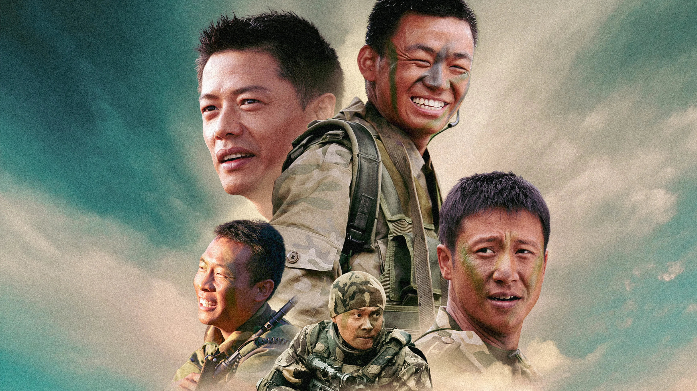
士兵突击 · 2006
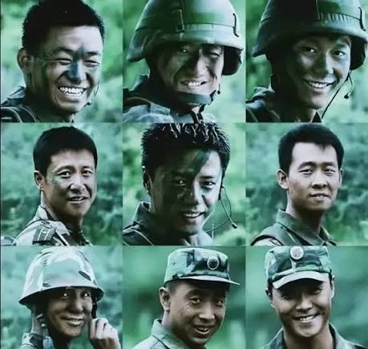
钢七连
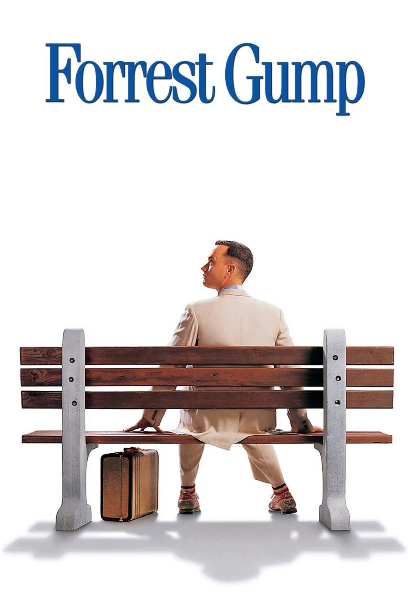
阿甘正传 · 1994
士兵突击Soldiers Sortie · 2006 · Series不抛弃，不放弃。一个不聪明的人，把一件事做到底，做成了所有聪明人做不成的样子。
阿甘正传Forrest Gump · 1994 · FilmRun, Forrest, run. 想不明白的时候，先跑起来，路会在跑的过程里出现。
士兵突击 · 不抛弃，不放弃
阿甘正传 · Run, Forrest, run.
活人感清单
钓鱼是耐心练习，露营是重启方式，咖啡是每天的开机键。大部分灵感不在工位上，在大自然里。
●钓鱼
●露营
●手冲咖啡
●大自然
●热爱生活
韧性
我不太相信一夜之间的改变，更相信长期做一件事时形成的稳定性。从西北的一座小城出发，很多路都不是提前铺好的，只能自己判断、自己补课、自己往前走。《士兵突击》和《阿甘正传》我重看了很多遍，大概也是因为我喜欢那种慢一点但不停下来的人。